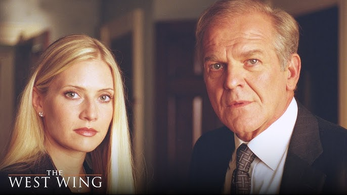

Sinopsis
El piloto no solo presenta una historia, te hace promesas
El análisis
Es interesante pensar en cómo tus series favoritos te engancharon a que te quedaras viendo. Sabiendo que seguramente el terminar el material te llevaría por lo menos algunas horas, el primer capítulo, y el inicio siendo más granulares, son tremendamente relevantes tanto para nosotros como espectadores como para los que están detrás del proyecto.
Un capítulo piloto sirve como punto de referencia que, mientras más disruptivo se presente a sí mismo, más puede llegar a tender la audiencia a experimentar lo que queda de material. Hoy en día, vivimos en una pelea constante de entre todos los proveedores de entretenimiento. Todos buscan una misma cosa: tu atención.
Por eso resulta tan importante que un primer episodio funcione. En primer lugar, probablemente para los productores que vendieron el proyecto a la compañía correspondiente, seguramente el piloto les funciona para tener esa conversación de elevador y que el financiamiento adecuado llegue al proyecto para ver la luz.
En segunda instancia, podemos hablar de nuestra posición de espectadores. Seamos honestos, las personas que acaban series o ven series hoy en día son cada vez menos. Hay un tipo de contrato no escrito que haces con una serie una vez la empiezas. Y no quieres que te falle, tiene que ser interesante desde el segundo 0.
Ese primer vistazo presenta a los personajes, establece las reglas del juego, el ritmo de los diálogos y la atmósfera moral de su universo. En el caso de The West Wing y The Newsroom, se utilizan los primeros minutos para involucrarte rápidamente en un dinamismo de palabras e ideales. Este tipo de introducciones atrapan por el dinamismo intelectual y demuestran cómo un buen comienzo puede dar pie a la identidad de toda una obra cinematográfica, dejando claro qué tipo de historia se está a punto de presenciar.
En otro tipo de arranques como el de House of Cards o It's All Her Fault son más un tipo de golpes al estómago que incapacitan momentáneamente las expectativas del público. No se define un contexto gradualmente, se opta por romper la cuarta pared por sembrar misterio desde las primeras secuencias.
Un buen piloto no cuenta el final: te hace necesitarlo.
Fragmentos


Conclusión
La relevancia de los inicios de las series, nuevamente, radica en su capacidad de atrapar la atención (mientras más irreversible, mejor) en una era de búsqueda de gratificación instantánea. Un comienzo poderoso es toda una declaración de intenciones que decide si nos quedaremos sentados por las próximas horas, o volveremos al scroll infinito.
Siguiente actividad
Lenguaje Cinematográfico y Televisivo